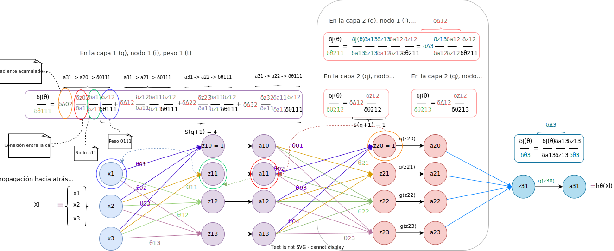

Dado un ejemplo \(X\), tal que \(X\) es un vector fila \(1 \times 3\):
\[%align x = \begin{bmatrix}x_1 & x_2 & x_3\end{bmatrix} \]Tenemos que las entradas a la red neuronal con un capa se introducen como sigue:

De tal manera que obtenemos una salida \(h_\Theta(x)\).
Supongamos que utilizamos la función sigmoide (problema de clasificación con dos clases):
\[%align h_\Theta(X) = \frac{1}{1+e^{-\Theta^TX}} \]Donde:
\[%align \Theta^TX = \sum_{j=0}^m\sum_{i=0}^n \theta_{i} \cdot x_{ij} \]Con \(x_{01} = 1\), para multiplicar con el término independiente de los pesos \(\theta_0\).
Normalmente \(\Theta\) está dividido en:
- Término independiente/sesgo (bias): \(\theta_0\), también denotado como \(b\).
- Pesos (bias): \(\theta_i\), con \(1 \leq i \leq n\), también denotados como \(w\).
- \(X = (x_{ij})\) una matriz \(n \times m\) donde cada \(x_{ij}\) es la característica \(i\) del ejemplo \(j\), tal que \begin{align} X = \begin{bmatrix} x_{11} & \cdots & x_{1m} \\ \cdots & \ddots & \cdots \\ x_{n1} & \cdots & x_{nm} \\ \end{bmatrix} \end{align}
Cada columna es un ejemplo
En cada fila están los valores de una característica
Para regresión lineal, donde hay una salida por cada ejemplo \(j\):
- \(Y = (y_j)\) es un vector fila \(1\times m\) donde cada \(y_j\) es la salida real para el ejemplo \(j\), tal que:
- \begin{align} Y = \begin{bmatrix} y_{1} & \cdots & y_{m} \\ \end{bmatrix} \end{align}
Para regresión logística, donde hay \(c\) salidas por cada ejemplo \(j\) (cada salida es la probabilidad de que el ejemplo sea de la clase \(l\): Clasificación múltiple).
- \(Y = (y_{ij})\) es una matriz \(c\times m\) donde cada \(y_{ij}\) es la salida real para el ejemplo \(j\) y la clase \(i\), es decir es un valor binario que indica si el ejemplo \(j\) pertenece (1) o no (0) a la clase \(i\), tal que:
- \(k\) es el número de capas de la red
- Para cada capa \(j\), asumimos que la capa tiene \(q\) nodos.
- \(a_i^{(j)}\): Nodo \(i\) en la capa \(j\)
- \(\Theta^{(j)}\): Matriz de pesos de la capa \(j\) a la capa \(j+1\)
-
La dimensión de cada \(\Theta^{(j)}\) es \(S_{j} \times (S_{j-1} + 1)\)
- \(S_{j}\): número de características/nodos en la capa \(j\).
- \((S_{j-1} + 1)\): número de características en la capa \(j - 1\) más 1 (término independiente en cada capa)
Sean \(k\) el número de capas de la red. Para cada capa \(j\), on \(a^0 = X_l\) (donde \(X_l\) es un ejemplo: un vector columna en \(X\)):
Primero se calcula el término intermedio \(z^{(j)}\), que es un vector columna \(S_{(j)} \times 1\):
\begin{align} z^{(j)} = \Theta^{(j)} \cdot a^{(j-1)} \end{align}Donde, como ya hemos dicho, \(\Theta\) es la matriz \(S_{(j)} \times S_{(j-1)}\) de pesos de la capa \(j\), siendo \(p\) el número de nodos en la capa \((j-1)\) más uno (el término independiente).
A continuación se aplica sobre \(z^{(j)}\) la función de activación, tal que:
\begin{align} a^{(j)} = g(z^{(j)}) \end{align}Esto se representa gráficamente en la siguiente imagen:

Cabe destacar que la función de activación de la última capa suele ser distinta al resto. De todas formas, las funciones de activación no tienen por qué ser iguales, nosotros en estes ejemplos hemos utilizado la función sigmoide, pero depende de la aplicación que se le quiera da a la red neuronal.
Para crear una red neuronal que permita trabajar con \(c\) clases lo que hacemos es hacer que la red neuronal tenga \(c\) nodos en su capa de salida. Esto se ilustra en la siguiente imagen:

De tal manera que ahora, cada salida \(y_j\) será un vector columna \(c\times1\), donde existe un valor por cada categoría, al igual que la hipótesis para el ejemplo \(j\), \(h_\Theta(x_j)\), es un vector columna \(c\times1\).
Como podemos ver, los valores de \(y_j\) indican claramente a qué clase pertenece el ejemplo \(j\) (clase 3), mientras que la hipótesis \(h_\Theta(x_j)\) ofrece, para cada clase (columna) la probabilidad de que el ejemplo \(j\) pertenezca a esa clase.
Como ya hemos visto en función del número de clases la salida tendrá distinta forma:
- Clasificación binaria: para cada ejemplo \(j\), \(y_j \in \{0, 1\}\), \(h_\Theta(x_j) \in \mathbb{R}\)
- Clasificación múltiple: para cada ejemplo \(j\), \(y \in \mathbb{R}^c\), \(h_\Theta(x_j) \in \mathbb{R}^c\), donde \(c\) es el número de clases
- Sea \(k\) el número de capas y \(S_i\) el número de nodos en la capa \(i\).
- Sea \(Y=(y_{ij})\) una matriz \(c\times m\), donde \(m\) es el número de ejemplos y cada \(y_{j}\) es el vector columna \(c\times1\) de salida para el ejemplo \(j\).
Definimos la función de coste como sigue:
\begin{align} J(\Theta) = - \frac{1}{m} \left\{ \sum_{j=1}^m \sum_{i=1}^c [y_{ij}\cdot \log(h_\Theta(x_j)_i)] + [(1-y_{ij})\cdot \log(1-(h_\Theta(x_j)_i))]\right\} \end{align}El primer sumatorio que va de 1 a \(m\) se encarga de calcular el coste para cada ejemplo \(j\). Mientras que el segundo sumatorio, que va de 1 a \(c\), se encarga de calcular el coste para cada nodo de salida.
Esta función se aplica sobre los \(k\) nodos en la capa de salida.
Ejemplo Cálculo Función de Coste
Definimos la función de coste introduciendo regularización como sigue:
\begin{align} J(\Theta) = - \frac{1}{m} \left\{ \sum_{j=1}^m \sum_{i=1}^c [y_{ij}\cdot \log(h_\Theta(x_j)_i)] + [(1-y_{ij})\cdot \log(1-(h_\Theta(x_j)_i))]\right\} + \frac{\lambda}{2m} \sum_{q=1}^k \sum_{i=1}^{S_q}\sum_{j=1}^{S_{q+1}} (\theta_{ji}^{(q)})^2 \end{align}Antes de nada, recordar que \(S_q\) denota el número de nodos en la capa \(q\). Entonces, el primer término de la función es igual que cuando no se aplicaba regularización. Expliquemos el segundo término. La regularización, en este caso, consiste en sumar todos los pesos de la red neuronal, por lo tanto:
- Por cada capa \(q\), con \(1 \leq q \leq k\), sumamos todos los elementos de la matriz de pesos \(\Theta^{q}\), que como sabemos tiene dimensiones \(S_{q} \times S_{q-1}\)
-
Dada la matriz \(\Theta^{(q)}\)
- Recorremos cada columna \(i\), con \(1 \leq i \leq S_{q-1}\)
- Recorremos cada elemento \(j\) de la columna \(i\), con \(1 \leq j \leq S_{q}\)
- Sumamos al total cada elemento de la matriz \(\Theta^{(q)}_{ji}\)
- Una vez se han sumado todas las matrices de pesos obtenemos un escalar, que multiplicamos por \(\frac{\lambda}{2m}\)
La salida de cada capa \(q\) es una matriz \(S_q \times m\), donde \(S_q\) denota el número de nodos en la capa \(q\) y \(m\) denota el número de ejemplos.
Como vimos en nuestras figuras, donde se presentaban los cálculos sólo para un ejemplo, en cada capa \(q\) podemos mapear la salida de los \(S_q\) nodos a un vector columna \(S_q \times 1\).
Si generalizamos esto a \(m\) ejemplos tenemos que la salida de cada capa es una matriz \(S_q \times m\). Esto se ilustra en la siguiente imagen:

Vamos, ahora a explicar cómo se aplica la retropropagación. Lo primero que debemos tener en cuenta es que este proceso se basa en la misma idea de optimización que la Regresión Lineal y la Regresión Logística, es decir, lo que queremos hacer es minimizar el coste, \(J(\Theta)\)
Sea \(c\) el número de nodos en la última capa, \(\theta_{it}\) el peso \(t\) del nodo \(i\) de la última capa \(k\), \(a_{ij}^{(k)}\) la salida del nodo \(i\) para el ejemplo \(j\) en la capa \(k\):
- Calculamos el gradiente de la última capa \(k\) como: \(\frac{\delta J(\Theta)}{\delta \theta_{it}^{(k)}} = \frac{\delta J(\Theta)}{\delta a_{1j}^{(k)}}\frac{\delta a_{1j}^{(k)}}{\delta \theta_{it}^{(k)}}\)
- Calculamos el gradiente en capas intermedias utilizando la regla de la cadena como: \(\frac{\delta J(\Theta)}{\delta \theta_{it}^{(q)}} = \sum_{i=1}^{S_{(q+1)}} \frac{\delta J(\Theta)}{\delta a_{ij}^{(q+1)}}\frac{\delta a_{ij}^{(q+1)}}{\delta a_{ij}^{(q)}}\frac{\delta a_{ij}^{(q)}}{\delta \theta_{it}^{(q)}}\)
Normalmente en las capas intermedias, \(q\), nos referimos al término \(\frac{\delta J(\Theta)}{\delta a_{ij}^{(q+1)}}\) como \(\Delta^{(q+1)}_{ij}\).
A continuación explicamos cómo derivar la función de coste (Paso 1).
Derivada de la función de coste
Veamos, ahora, cómo llevar a cabo el Paso 2: ¿cómo calculamos el gradiente (o lo que contribuye el peso \(it\) en el error) para los pesos de las capas intermedias?, es decir, cómo calculamos:
\[%align \frac{\delta J(\Theta)}{\delta \theta_{it}^{(q)}} \]Por ejemplo, supongamos que tenemos una red con tres capas, entonces \(k=3\), dado un ejemplo \(x_j\). En este caso tenemos que
La derivada en la última capa, para el único vector de pesos \(\theta^{(3)}_1\) que tiene \(n\) elementos (features o características), es: \(\frac{\delta J(\Theta)}{\delta \theta_{1t}^{(3)}}\), para cada \(t\), \(0 \leq t \leq n\)
Como:
\begin{align} J(\Theta) = E^{(3)}(a_1^{(3)}) = E^{(3)}(g(z_1^{(3)})) = E^{(3)}(g(\Theta^{(3)}\cdot a^{(2)})) \end{align}Donde denotamos la función que calcula el error entre lo predicho y la salida real como \(E\), y \(g\) es la función de activación.
Entonces, aplicamos la regla de la cadena para cada elemento \(t\) en el vector de pesos:
\begin{align} \frac{\delta J(\Theta)}{\delta \theta_{1t}^{(3)}} = \frac{\delta J(\Theta)}{\delta a_1^{(3)}}\frac{\delta a_1^{(3)}}{\delta z_1^{(3)}}\frac{\delta z_1^{(3)}}{\delta \theta_{1t}^{(3)}} \end{align}Si vectorizamos:
\begin{align} \frac{\delta J(\Theta)}{\delta \theta_{1}^{(3)}} = \frac{\delta J(\Theta)}{\delta a_1^{(3)}}\frac{\delta a_1^{(3)}}{\delta z_1^{(3)}}\frac{\delta z_1^{(3)}}{\delta \theta_{1}^{(3)}} \end{align}Si ahora queremos obtener la derivada para uno de los vectores de pesos en la capa \(2\), volvemos a aplicar la regla de la cadena. Tenemos ahora que desestructurar la función de coste todavía más, hasta obtener la expresión que incluye las salidas de la capa \(1\), \(a^{(1)}\).
\begin{align} J(\Theta) = E^{(3)}(g(\Theta^{(3)}\cdot a^{(2)})) = E^{(3)}(g(\Theta^{(3)}\cdot g(z^{(2)}))) = E^{(3)}(g(\Theta^{(3)}\cdot g(\Theta^{(2)} \cdot a^{(1)}))) \end{align}Sea \(\Delta^{(3)}_{1j}\):
\begin{align} \Delta^{(3)}_{1j} = \frac{\delta J(\Theta)}{\delta a_{1j}^{(3)}}\frac{\delta a_{1j}^{(3)}}{\delta z_{1j}^{(3)}} \end{align}Entonces, aplicamos la regla de la cadena para cada nodo \(i\) de la capa \(2\) y para cada elemento \(t\):
\begin{align} \frac{\delta J(\Theta)}{\delta \theta_{it}^{(2)}} = \sum_{l=1}^{S_{(3)}} \Delta_{lj}^{(3)}\frac{\delta z_{lj}^{(3)}}{\delta a_{lj}^{(2)}}\frac{\delta a_{lj}^{(2)}}{\delta z_{lj}^{(2)}}\frac{\delta z_{lj}^{(2)}}{\delta \theta_{it}^{(2)}} = \Delta_{1j}^{(3)}\frac{\delta z_{1j}^{(3)}}{\delta a_{1j}^{(2)}}\frac{\delta a_{1j}^{(2)}}{\delta z_{1j}^{(2)}}\frac{\delta z_{1j}^{(2)}}{\delta \theta_{it}^{(2)}} \end{align}Si vectorizamos:
\begin{align} \frac{\delta J(\Theta)}{\delta \theta_{i}^{(2)}} = \Delta_{j}^{(3)}\frac{\delta z^{(3)}}{\delta a_{j}^{(2)}}\frac{\delta a_{j}^{(2)}}{\delta z_{j}^{(2)}}\frac{\delta z_{j}^{(2)}}{\delta \theta_{i}^{(2)}} \end{align}Para la capa \(1\), volvemos a expandir la función de coste para ver cómo aplicar la regla de la cadena:
\begin{align} J(\Theta) = E^{(3)}(g(\Theta^{(3)}\cdot g(\Theta^{(2)} \cdot a^{(1)}))) = E^{(3)}(g(\Theta^{(3)}\cdot g(\Theta^{(2)} \cdot g(z^{(1)})))) = \end{align} \begin{align} = E^{(3)}(g(\Theta^{(3)}\cdot g(\Theta^{(2)} \cdot g(\Theta^{(1)} x_j)))) \end{align}Para simplificar la notación: sea, para cada nodo \(l\) de la capa \(2\)
\begin{align} \Delta^{(2)}_{lj} = \Delta_{1j}^{(3)}\frac{\delta z_1^{(3)}}{\delta a_{lj}^{(2)}}\frac{\delta a_{lj}^{(2)}}{\delta z_{lj}^{(2)}} \end{align}Aplicamos la regla de la cadena, tal que para cada nodo \(l\) de la capa \(2\):
\begin{align} \frac{\delta J(\Theta)}{\delta \theta_{it}^{(1)}} = \sum_{l=1}^{S_{(2)}} \Delta_{lj}^{(2)}\frac{\delta z_{lj}^{(2)}}{\delta a_{lj}^{(1)}}\frac{\delta a_{lj}^{(1)}}{\delta z_{lj}^{(1)}}\frac{\delta z_{lj}^{(1)}}{\delta \theta_{it}^{(1)}} \end{align}Si vectorizamos:
\begin{align} \frac{\delta J(\Theta)}{\delta \theta_{i}^{(1)}} = \Delta_{j}^{(2)}\frac{\delta z_{j}^{(2)}}{\delta a_{j}^{(1)}}\frac{\delta a_{j}^{(1)}}{\delta z_{j}^{(1)}}\frac{\delta z_{j}^{(1)}}{\delta \theta_{i}^{(1)}} \end{align}El procedimiento se ilustra en la siguiente figura:
